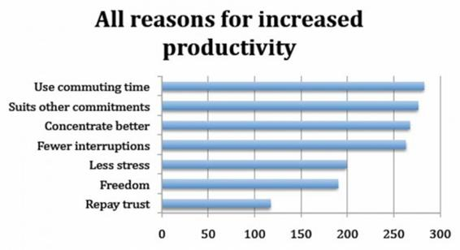
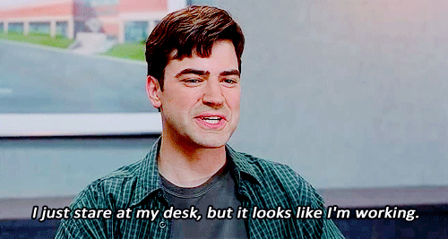

A little bit of history..
What is Telecommuting?
“Telecommuting refers to the use of technology and modern telecommunications products to enable one to work from home, or any other place rather than the traditional workplace or office.”
Effectiveness of Telecommuting
British Telecom had 31 percent rise in productivity due to lack of disruptions, stress and commuting time.
Reduces interruptions/distractions, increases efficiency/productivity.
Replaces the ritual of getting ready for work.
Saves cost on both sides; employee and employer.
How does Telecommuting work?
Its 8 a.m. on Monday Morning.
Get off the bed, brush your teeth and stumble your way to the kitchen for coffee.
With pyjamas and fluffy slippers, you head to the office
** Luckily, you don't have to go far - you work at home **
Turn on the computer and start collaborating using VOIP or softwares such as below.
Voilà! You earned your salary by siting at home and working.
Telecommuting can be great for you and the company.
No more commuting and office stress

Cut cost, improve productivity
But it has its downs too...
Combined stress – home & work
Affects family relationship
Conclusion
Telecommuting is not for everyone, but it may be for you.

Teleworking with Designing Out Crime